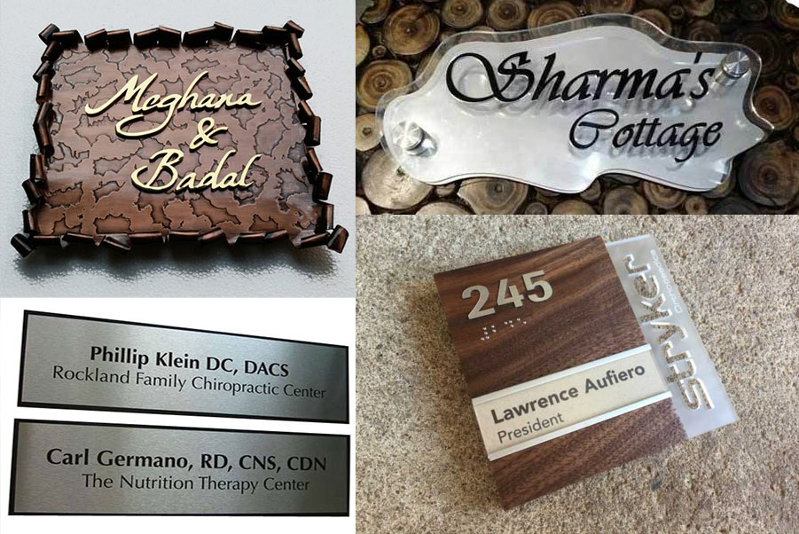

Assignment 1: Create a Name Plate

UX Development Process
Research Question: Who is the user of the Name Plate?
- NOT myself, I already know who I am
- NOT friends or family, they know who I am
- Observation of Jami's environment: Fellow co-workers in my place of employment
Problem Statement
- Co-workers need a way to find Jami Odell in a large business complex so they can communicate in person
Hypothesis
- We believe that a Name Plate will help fellow co-workers quickly and easily locate Jami within a large office complex
UX Research Methods
- Contextual discovery interviews with fellow co-workers
- How do you seek out co-workers in person?

Findings
When searching for co-workers inside of the corporate office, users:
- Need to know where their desk is
- Are very busy with limited time
- May only know co-workers by name but not by appearance
- Search by starting in the general vicinity
- Scan the isles for rapidly name plates
If not at desk, users need to:
- Know when they will be back
- Leave them a Message
- Have a way to contact them in the future
- Easily remember where they sit
Competitive analysis:
- Most name plates focus on aesthetics, not usability
- Would fail accessibility due to hard to read fonts and low contrast, like black on aluminum
- Have no features beyond the name

Design approach
Create and artifact that meets user needs that includes the following features, in order of value to user:
- Easy to spot, legible name
- Messaging feature
- Return time feature
- Future contact feature

Usability Testing
- Would not use post it notes system, just send email
- Thought the image should be larger
- Said they would not take a business card
- Need to see name from end of the row

Thank You!